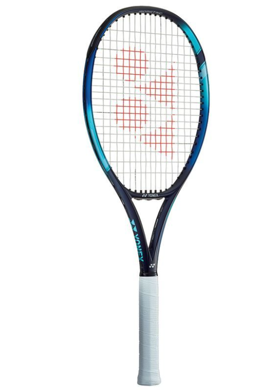

Racket Specifications
Physical Specs
- Head Size: 100 in² / 645.16 cm²
- Length: 27 in / 68.58 cm
- Strung Weight: 10.5 oz / 298 g
- Balance: 13.18 in / 33.48 cm / 3 pts HL
- Swingweight: 308
- Stiffness: 69
- Beam Width: 23.8mm / 26.5mm / 22.5mm
Technical Details
- Composition: 2G NAMD Speed/HM Graphite
- Power Level: Low-Medium
- Stroke Style: Medium-Full
- Swing Speed: Medium-Fast
- Racquet Colors: Black
- Grip Type: Yonex Synthetic
Stringing Information
- String Pattern: 16 Mains / 19 Crosses
- Mains Skip: 7T, 9T, 8H
- Stringing Type: Two Pieces
- Shared Holes: No
- String Tension Range: 40-55 pounds
Stringing Log
| Date | Mains | Crosses | DT |
|---|---|---|---|